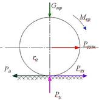
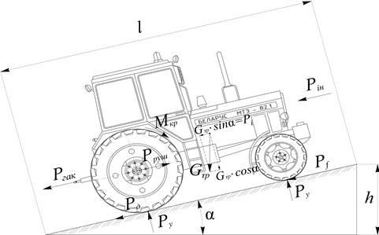
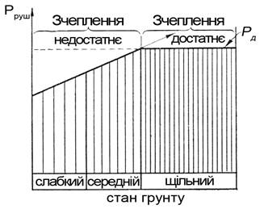
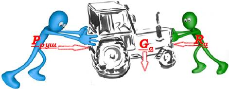
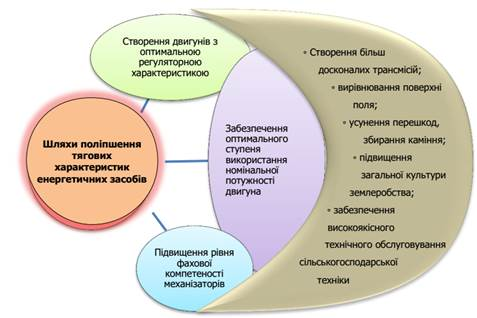
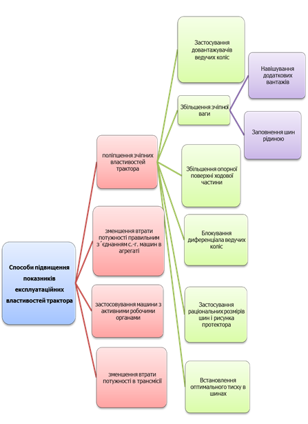
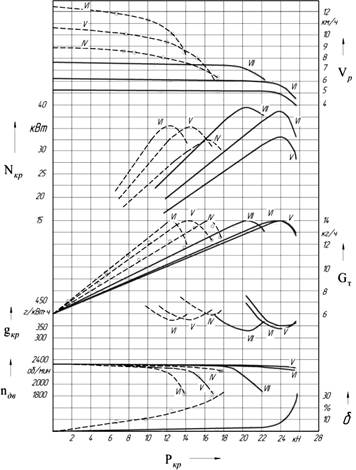

Машинно-тракторний агрегат в динамічному відношенні – це система твердих тіл, зв’язаних між собою жорсткими і пружними елементами.
Сила, що рухає трактор, представлена реакцією ґрунту на ведучі колеса в напрямі руху і дорівнює найменшій з двох сил: дотичній силі тяги \(P_д\) або сили зчеплення \(P_{зч}\).

Рис. 1.3.1. Схема створення рушійної сили енергетичного засобу
На рис. 1.3.2 подано загальну схему зовнішніх сил, які діють на трактор під час його руху на узвіз під кутом \(\alpha\).
Сила опору руху машини – тяговий опір \(R = P_{гак}\) (де \(P_{гак}\) – тягове зусилля трактора).
Сила опору руху трактора \(P_f\) – є наслідком деформації ґрунту ходовим апаратом і тертя в ньому.
Сила опору руху трактора на місцевості з кутом нахилу \(P_i\) \((P_{під})\).
Сила інерції \(P_{ін}\) виникає за нерівномірного руху трактора.

Рис. 1.3.2. Схема сил, що діють на трактор
\(P_{гак}\) – тягове зусилля трактора;
\(P_{д}\) – дотична сила тяги трактора;
\(P_{f}\) – сила опору руху трактора;
\(P_{і}\) – сила опору підйому трактора;
\(P_{ін}\) – сила інерції;
\(P_{руш}\) – рушійна сила трактора;
\(G_{тр}\) – експлуатаційна вага трактора;
\(P_{y}\) – сила реакції ґрунту на ходовий апарат трактора.
2. Умови руху машинно-тракторних агрегатів. Дотична сила трактора, її визначення. Рушійна сила трактора та умови її утворення
Для руху агрегату потрібна зовнішня сила, спрямована убік переміщення. Вона виникає за взаємодії ведучих коліс або гусениць з ґрунтом і обмежується, з одного боку, силою зчеплення трактора з ґрунтом \(P_{зч}\), а з другого – дотичною силою \(P_д\), що створюється двигуном.
Реакцію ґрунту за найбільш допустимого буксування ходового апарата називають максимальною силою зчеплення \(P_{зч}\). Її значення залежить від щільності ґрунту: що щільніший ґрунт, то більша сила (рис. 1.3.3).

Рис. 1.3.3. Залежність рушійної сили трактора від стану ґрунту
Дотична сила трактора та її визначення
Номінальну дотичну силу тяги на ободі ведучого колеса розраховують для обраної передачі трактора за формулою:
де \(N_{e}\) – номінальна потужність двигуна;
\(i_{тр}\) – передаточне число трансмісії;
\(n_{д}\) – номінальна частота обертання колінчатого вала двигуна, \(хв^{-1}\);
\( r_{к}\) – радіус ведучого колеса (зірочки) трактора;
\(\eta_{тр}\) – коефіцієнт корисної дії трансмісії.
Для колісних тракторів на пневматичних шинах радіус ведучого колеса визначається за формулою:
$$
r_{к}={r_{0} + h \cdot \lambda},\: м,
$$
де \(r_{0}\) – радіус обода колеса, м;
\(h\) – висота пневматичної шини, м;
\(\lambda\) – коефіцієнт усадки пневматичних шин низького тиску (на твердому ґрунті \(\lambda = 0,7\); на стерні і перелозі \(\lambda = 0,75\), на зораному полі \(\lambda = 0,8\)).
Дотична сила, як бачимо з формули, залежить лише від параметрів енергетичних засобів, на неї не впливає стан ґрунту.
Рушійна сила трактора та умови її утворення
Рушійну силу, яка переміщує агрегат, знаходять порівнянням значень дотичної сили \(P_{д}\) і сили зчеплення ведучого апарата з ґрунтом \(P_{зч}\), вона дорівнює меншій із них.
При \(P_{д} \leq P_{зч}\) зчеплення достатнє і \(P_{руш} = P_д\), а при \(P_{д} \geq P_{зч}\) зчеплення недостатнє і \(P_{руш} = P_{зч}\). Тому під час роботи на легких ґрунтах доцільно підвищувати зчіпну вагу. Що більша зчіпна вага трактора, то краще реалізується дотична сила тяги.
На ґрунтах, де \(P_{зч}\) достатня, додаткові пристрої, які підвищують зчеплення з ґрунтом, знімають, щоб не збільшувати втрати потужності на пересування енергетичних засобів.
Межа рушійної сили за потужністю двигуна:
$$
P_{руш}=P_{д}=\frac{10 \cdot N_{e}\cdot i_{тр}\cdot \eta_{тр}}{n_{д}\cdot r_{к}},\: кН.
$$
Максимальна рушійна сила трактора за умовами зчеплення рушіїв з ґрунтом:
$$
P_{руш}={\mu \cdot G_{зч}},\: кН,
$$
де \(\mu\) – коефіцієнт зчеплення, що залежить від властивостей ґрунту і конструкції рушія;
\(G_{зч}\) – зчіпна вага трактора (\(G_{зч}= G_{тр}\) – для гусеничних і колісних з двома ведучими мостами; (\(G_{зч}= 2/3G_{тр}\) – для колісних з одним ведучим мостом).
3. Рівняння руху агрегату. Тяговий баланс трактора та його аналіз
Рух МТА здійснюється як результат взаємодії сил на агрегат.
Рух та робота агрегату можливі лише за певного співвідношення сил, які діють на агрегат у напрямку руху, швидкості руху з врахуванням наведеної маси агрегату. Рух і робота агрегату відбувається як результат взаємодії рушійної сили \(P_{руш}\), тягового опору машини \(P_{кр}\) і сили опору руху трактора \(P_f\), ваги трактора \(G_{тр}\), та ваги машини \(G_{м}\), реакцій ґрунту і реакцій між окремими машинами агрегату тощо.
Рівняння руху є основою усіх розрахунків з комплектування агрегатів і режимів їх роботи.
де \(dv/dt\) – прискорення агрегату, \(м/с^2\);
\(P_{\text{руш}}\) – рушійна сила трактора, кН;
\(R_{\text{а}}\) – опір агрегату, кН;
\(G_{\text{а}}\) – наведена маса агрегату, кН.

Рис. 1.3.4. Зображення рівняння руху агрегату
Усі величини, що входять у це рівняння, в процесі руху агрегату, безперервно змінюються. На ці параметри впливають і коливання крутного моменту двигуна через нерівномірність подання палива, і зміни властивостей ґрунту, і деякі інші фактори.
Спільна дія цих факторів призводить до знакозмінних коливань прискорень під час руху агрегату, його поступальної швидкості, негативно впливає на роботу двигуна і агрегату загалом. За інших однакових умов агрегати (трактори) з великою масою краще зберігають сталість поступального руху.
Рівняння руху є основою усіх розрахунків з комплектування агрегатів і режимів їх роботи.
З певним припущення можна вважати, що машинно-тракторні агрегати під час виконання операції мають сталий рух \((v_р = const)\). При цьому \(dv/dt = 0\), тоді \(P_{руш} - \Sigma P_o = 0\) або \(P_{руш} = \Sigma P_o\). Підставивши значення \( \Sigma P_o\) у формулу для визначення \(P_{руш}\), дістанемо:
де \(P_{гак}\) – тяговий опір машини, кН;
\(P_{f}\) – опір перекочування трактора, кН;
\(P_{і}\) – опір підйому, кН;
\(P_{п}\) – опір повітряного середовища, кН.
Це рівняння являє собою рівняння тягового балансу трактора за рівномірного руху.
Складові рівняння визначають таким чином:
Опір перекочування трактора:
$$
P_{f}={G_{тр} \cdot f},\: кН,
$$
де \(G_{тр}\) – вага трактора, кН;
\(f\) – коефіцієнт опору руху (залежить від типу агротехнічного фону і типу рушія).
Опір підйому:
$$
P_{і}={G_{тр} \cdot і},\: кН,
$$
де \(і\) – нахил поля, соті частки відсотка.
Опір повітряного середовища для сільськогосподарських тракторів за швидкості до 40 км/год не має суттєвого значення і тому в розрахунках не враховують.
4. Зчіпні властивості тракторів та шляхи їх поліпшення. Вплив умов експлуатації на тяговий баланс трактора
Для того щоб визначити зчеплення трактора з ґрунтом на будь-якій передачі, потрібно обчислити максимальну силу за формулою:
$$
P_{зч}={G_{зч} \cdot \mu},
$$
де \(G_{зч}\) – зчіпна вага трактора, кН;
\(\mu\) – коефіцієнт зчеплення.
Зчіпна вага гусеничних і колісних тракторів з чотирма ведучими колесами в стані спокою дорівнює їхній вазі:
$$
G_{зч}= G_{тр}.
$$
Зчіпну вагу колісних тракторів з одним ведучим мостом можна визначити з точністю, достатньою для практичних розрахунків, за формулою:
$$
G_{зч}= 2/3G_{тр}.
$$
Що більша сила тяги, то масивнішим має бути трактор, щоб забезпечити достатню силу зчеплення.
Найпростіше зчіпні властивості тракторів визначати експериментально за допомогою коефіцієнта зчеплення \(\mu\), який являє собою відношення найбільшої дотичної сили за допустимого буксування до нормальної реакції ґрунту на ведучий апарат енергетичного засобу на горизонтальній ділянці під час усталеної роботи.
Коефіцієнт зчеплення ходового апарата з ґрунтом залежить від фону ґрунту і типу рушія енергетичних засобів.
Зчіпні властивості трактора визначають дослідним шляхом і оцінюють коефіцієнтом зчеплення ведучої частини з ґрунтом. У табл. 1.3.1 наведено значення коефіцієнта зчеплення для основних ґрунтів різних типів.
Таблиця 1.3.1 Коефіцієнт зчеплення для різних ґрунтових фонів
Тип фону (основи)
і стан ґрунту
Приблизне значення коефіцієнтів зчеплення, μ
для
колісних тракторів
для
гусеничних тракторів
Цілина, міцна дернина
0,6...0,7
1,0...1,2
Стерня нормальної вологи
0,5...0,6
0,8...1,0
Зоране поле
0,4...0,5
0,6...0,7
Поле, підготовлене для сівби
0,4...0,6
0,7...0,8
Вологий пісок
0,4...0,5
0,5...0,6
Сухий пісок
0,3
0,4...0,5
Шляхи поліпшення зчіпних властивостей тракторів:
збільшення зчіпної ваги;
застосування раціонального розміру шин та рисунка протектора;
раціональний розподіл маси по осях трактора;
збільшення опорної поверхні ходової частини;
блокування диференціала ведучих коліс.

Рис. 1.3.5. Шляхи поліпшення тягово-зчіпних властивостей трактора
Зчіпну вагу трактора збільшують різними способами: зачепленням додаткових вантажів на ведучі колеса, заповнення камер шин водою або 25 %-м розчином СаСl2, перерозподілом ваги, яка передається на ведучий міст від начіпної або напівначіпної сільськогосподарської машини, застосування механічних або гідравлічних довантажувачів ведучих коліс тощо.
Тягові властивості колісних тракторів можна значно підвищити, якщо обладнати їх напівгусеничним ходом, спеціальними ґрунтозачепами, решітчастими каркасами, здвоєними колесами. На пухкому вологому ґрунті напівгусеничний хід збільшує тягове зусилля колісного трактора приблизно на 60 %.

Рис. 1.3.6. Способи підвищення експлуатаційних властивостей трактора
5. Тягова характеристика трактора та її використання для експлуатаційних розрахунків
Тягова характеристика будується за даними польових випробувань тракторів на основних ґрунтових фонах: цілина, багаторічний переліг, дуже ущільнена стерня; стерня зернових колосових і однолітніх трав; поле після збирання кукурудзи або соняшнику; чистий пар; поле після збирання коренебульбоплодів; поле після переорювання; поле, підготовлене для сівби; свіжозоране поле.
Тягові характеристики подано у вигляді таблиць або графіка (рис. 1.3.7).
Тягова характеристика відображає зміни тягової потужності, швидкості руху, годинної і питомої витрати палива, буксування (а за необхідності і частоти обертання колінчатого вала двигуна) залежно від навантаження на гаку для цих ґрунтових умов.
Для скомплектованого агрегату, за тяговими характеристиками, визначають експлуатаційні показники робочого режиму: його опір, робочу швидкість, частоту обертання колінчастого вала двигуна, потужність на гаку, коефіцієнт буксування, витрату палива.

Рис. 1.3.7. Тягова характеристика трактора
Економічну роботу двигуна і трактора забезпечують такі режими, за яких максимальну ефективну потужність використовують не менш ніж на 70…80, а номінальну силу тяги \(P_{гак.н.}\) не менше як на 75…90 %. Раціональне значення коефіцієнта використання тягового зусилля для тракторів під час роботи на рівних ділянках коливається в межах 0,78…0,96.